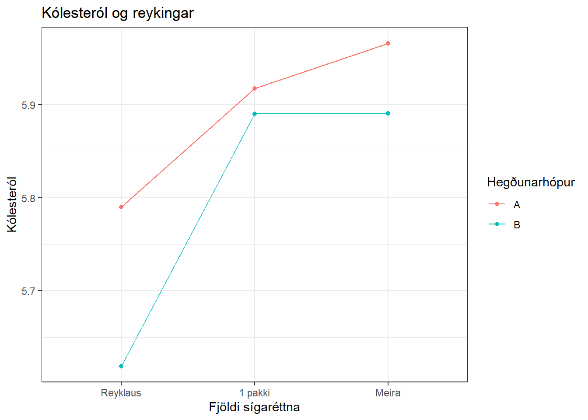
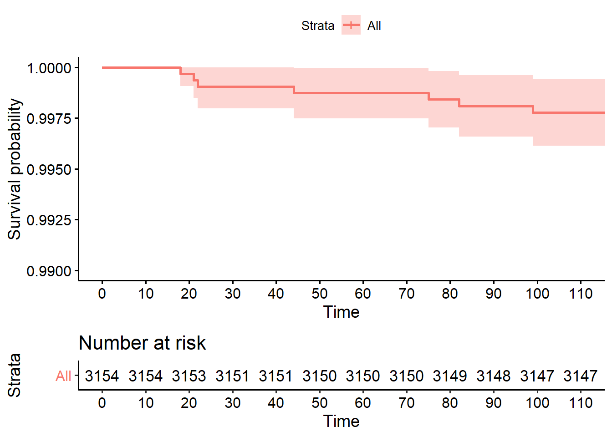

Chapter 3 Kaplan Meier
3.1 Kaplan Meier metilinn
Næst skoðum við Kaplan Meier metilinn en hann er ein langmest notaða tölfræðiaðferðin þegar framkvæmd er lifunargreining, meðal annars vegna þess að á honum byggja svo kölluð Kaplan-Meier gröf sem eru ein algengasta leiðin til að lýsa lifunargögnum.
Fyrst skulum við kynna til sögunnar svokallað lifunarfall (e. survival curve). Lifunarfallið er yfirleitt táknað með \(S(t)\) og túlkun fallsins er svohljóðandi
\[ S(t) = \text{Líkur þess að einstaklingur fá ekki atburð fram að tíma $t$.} \]
Lifunarfallið miðar alltaf við einhvern tiltekinn atburð. Oft er sá atburður dauði, en hann er einnig mjög oft eitthvað annað eins og til dæmis greining á sjúkdómi. Lifunarfallið gefur okkur þá líkurnar á því að hafa ekki fengið sjúkdóm innan tiltekins tíma.
Í okkar tilfelli væri \(S(5)\) líkur þess að einstaklingur fái ekki hjartasjúkdóm innan 5 ára. Ef ekki væri fyrir skerðingu væri lítill vandi að meta hvert það gildi væri, sem við samkvæmt venju köllum \(\hat S(5)\). Besta matið á \(\hat S(5)\) væri einfaldlega fjöldi þeirra sem fengu hjartasjúkdóm innan 5 ára af allri heildinni. En skerðingarinnar vegna vandast málin.
Kaplan Meier metilinn er stærðfræðileg regla til að meta \(\hat S(t)\). Hann er metinn á sérhverjum tímapunkti þegar atburður á sér stað (en ekki skerðing). Í gögnunum okkar fengu 257 karlmenn hjartasjúkdóm svo þessir tímapunktar eru að hámarki 257. Við nánari athugun reynast stundum fleiri en einn karlmaður fá hjartasjúkdóm eftir jafnlangan tíma svo tímapunktarnir eru alls 248. Ef við gefum þeim heiti eftir stærðarröð þeirra, \(t_1, \ldots , t_{248}\), þá væri:
- \(t_1 =\) 18, sem er sá tímapunktur þegar fyrsti maðurinn fékk hjartasjúkdóm,
- \(t_2 =\) 21 væri sá tímapunktur þegar næsti maður fékk hjartasjúkdóm
- \(t_{248} =\) 3229, væri að lokum sá tímapunktur þegar síðasti maðurinn fékk hjartasjúkdóm.
Kaplan Meier metilinn er metinn á sérhverjum þessara 248 tímapunkta. Formúla metilsins er
\[ \hat S(t) = \Pi_{i=1}^k \left( 1- \frac{d_i}{n_i} \right)\]
þar sem \(d_i\) táknar fjölda þeirra sem fengu atburðinn á tímapunkti \(i\) en \(n_i\) er fjöldi þeirra sem er enn í áhættu að fá atburðinn á tímapunkti \(i\), þ.e.a.s. hafa hvorki fengið atburðinn, né verið skertir.
Í fyrsta tímapunktinum er Kaplan Meier metillinn hreinlega hlutfall þeirra sem ekki var kominn með hjartasjúkdóm af þeim sem ekki voru orðnir skertir á þeim tímapunkti (þ.e.a.s. af þeim sem voru enn í eftirfylgd). Fyrir næsta tímapunkt þarf að reikna einn mínus hlutfall fjölda þeirra sem fékk hjartasjúkdóm á þeim tímapunkti af þeim sem enn voru í eftirfylgd á þeim tímapunkti og margfalda það gildi við síðasta reiknaða Kaplan-Meier gildið. Þannig er haldið áfram koll af kolli fyrir alla tímapunktana. Athugið að Kaplan Meier matið er eingöngu metið á þeim tímapunktum þegar atburður á sér stað. Ef við viljum meta lifunarfallið á tímapunktum sem lenda á milli þessara gilda notum við Kaplan-Meier matið fyrir næsta tímapunkt á undan.
Notum aðferð Kaplan Meier til að meta 5 ára áhættu á hjartasjúkdómi hjá öllum annars vegar og hópunum tveimur hins vegar. Notum fallið \(survfit\) úr pakkanum \(survival\).
# Allur hópurinn
KM_0 <- survfit(Surv(surv_time_y, status) ~ 1, data = wcgs_dat)
KM_0_sum_1 <- summary(KM_0, times = 1) # times = 1 fyrir 1 ár
KM_0_1 <- 1 - KM_0_sum_1$surv
KM_0_sum_5 <- summary(KM_0, times = 5) # times = 5 fyrir 5 ár
KM_0_5 <- 1 - KM_0_sum_5$surv
# Persónuleikagerð A og B
KM_1 <- survfit(Surv(surv_time_y, status) ~ dibpat, data = wcgs_dat)
KM_1_sum_1 <- summary(KM_1, times = 1) # times = 1 fyrir 1 ár
KM_1_1 <- 1 - KM_1_sum_1$surv
KM_1_sum_5 <- summary(KM_1, times = 5) # times = 5 fyrir 5 ár
KM_1_5 <- 1 - KM_1_sum_5$surv
ahaetta_1 <- rbind(round(KM_0_1,4), round(KM_1_1[1] ,4), round(KM_1_1[2], 4))
ahaetta_5 <- rbind(round(KM_0_5,4), round(KM_1_5[1] ,4), round(KM_1_5[2], 4))
# Setjum upp í töflu og berum saman við fyrri niðurstöður.
stats4 <- as_tibble(cbind(rownames,lambda_2,ar_ahaetta, ahaetta_1, ahaetta_5))
# !!! ATH betra útlit
#stats4 <- stats4 %>% rename( Hópar= rownames, Heildarfjöldi = V2, Tilfelli = V3, Eftirfylgnitími = V4, lambda = V5, áhætta5ár = V6)
stats4## # A tibble: 3 x 5
## rownames V2 V3 V4 V5
## <chr> <chr> <chr> <chr> <chr>
## 1 Allir 0.0111 0.0538 0.0048 0.0455
## 2 A 0.0156 0.0751 0.0082 0.0656
## 3 B 0.0066 0.0327 0.0013 0.0253Getum líka hugsað þetta út frá lifun, ef við skoðun KM_1_sum_5 þá sést að 5 ára lifun fyrir A hópinn er 0.9344 og öryggisbilið er (0.9221,0.947) og 5 ára lifun fyrir B hópinn er 0.9747 og öryggisbilið er (0.9668,0.9827).
!!! ATH mjög ólíkar tölur milli veldisvísisfallsins og KM, hvernig er best að skýra það?
3.2 Kaplan Meier gröf
Kaplan Meier gröf eru langalgengasta myndræna framsetningin á lifunargögnum. Þau eru leið til að lýsa lifunarfallinu myndrænt, þ.e.a.s. hversu hátt hlutfall þátttakanda hefur ekki fengið atburð eftir því sem tíminn líður. Gröfin teikna Kaplan Meier matið í sérhverjum tímapunkti og flatar línur milli punktanna. Gröfin eru látin “falla” á þeim tímapunktum sem atburðir eiga sér stað í samræmi við það hvernig matið er reiknað. Til þessa að teikna lifunarföllin þá notum við fallið \(ggsurvplot\) úr \(survminer\).
Skoðum fyrst Kaplan-Meier graf fyrir fyrstu 100 dagana fyrir allan hópinn og notum því tímaeininguna dagur.
KM_0_day <- survfit(Surv(time169,chd69)~1,data=wcgs)
km.plot <- ggsurvplot(KM_0_day,risk.table = T,break.time.by=10,xlim=c(0,110),
ylim=c(0.99,1))
km.plot 
Grafið byrjar í \(y=1.00\), þegar \(t=0\), enda hefur enginn fengið hjartasjúkdóm við byrjun rannsóknarinnar. Á tíma \(t=18\) fékk fyrsti maðurinn hjartasjúkdóm. Þar dettur línan úr 1.00 í 0.9997. Næsta “fall” verður við \(t=21\) þegar næsti maður fékk hjartaáfall og svo koll af kolli.
Stækkum nú tímarammann okkar og skoðum Kaplan-Meier grafið fyrir fyrstu 365 dagana:
km.plot <- ggsurvplot(KM_0_day,risk.table = T,break.time.by=30,xlim=c(0,365),
ylim=c(0.99,1))
km.plot 
Núna hafa nokkur lóðrétt strik bæst við. Þar eiga skerðingar sér stað þ.e. á þeim tímapunktum hefur einhver þátttakandi hætt í eftirfylgd af einhverjum ástæðum. Kaplan-Meier metilinn er bara metinn á þeim tímapunktum sem atburðir eiga sér stað, svo grafið breytist ekki á þeim tímapunktum sem skerðingar eiga sér stað. Sum tímarit kjósa að fá Kaplan-Meier gröf með slíkum merkingum þegar skerðingar eru en önnur ekki. Það er ætíð hægt að stilla til í R (nota censor = FALSE í ggsurvplot).
Skoðun nú Kaplan Meier gröfin eftir persónuleikagerð. Breytum skalanum aftur í ár.

Á þessari mynd virðist vera mikill munur á tíðni hjartasjúkdóma eftir persónuleikagerð. Rauði ferillinn, sem táknar persónuleikagerð A, er allur fyrir neðan bláa ferilinn sem táknar persónuleikagerð B. Þar af leiðandi metum við að lifunarfallið sé lægra, þ.e. að líkur þess að vera án hjartasjúkdóms eru minni, sem þýðir að líkurnar á því að fá hjartasjúkdóm eru hærri.
3.3 Log-rank próf
Nú skoðum við hvort sá munur á tíðni hjartasjúkdóma eftir persónuleikagerðunum sem við sáum bæði með Kaplan Meier metlinum og í Kaplan Meier grafinu sé tölfræðilega marktækur en allt bendir til þess að svo sé. Ein leið til að prófa þann mun er með log-rank prófi en það prófar hvort munur sé á tveimur lifunarföllum. Skipunin sem við notum er \(survdiff\) og er úr \(survival\) pakkanum.
## Call:
## survdiff(formula = Surv(surv_time_y, status) ~ dibpat, data = wcgs_dat)
##
## N Observed Expected (O-E)^2/E (O-E)^2/V
## dibpat=A 1583 177 125 21.3 41.9
## dibpat=B 1557 78 130 20.6 41.9
##
## Chisq= 41.9 on 1 degrees of freedom, p= 9e-11Munurinn reyndist marktækur, p-gildið er \(1 \cdot 10^{-10}\). Logrank prófið er líka hægt að nota þegar hóparnir eru fleiri en tveir og prófa það þá núlltilgátuna hvort allir ferlarnir séu eins.
Núlltilgátan er að atburðir séu jafn tíðir milli hópanna. Taflan sýnir Expected eða væntanlegan fjölda miðað við þá tilgátu. En gögnin sýna (Observed) að atburðir eru færri í B hóp og fleiri í A hóp en búast mætti við ef tilgátan væri sönn. Við höfnum þeirri tilgátu og drögum þá ályktun að tíðni atburða sé meiri í A hóp.